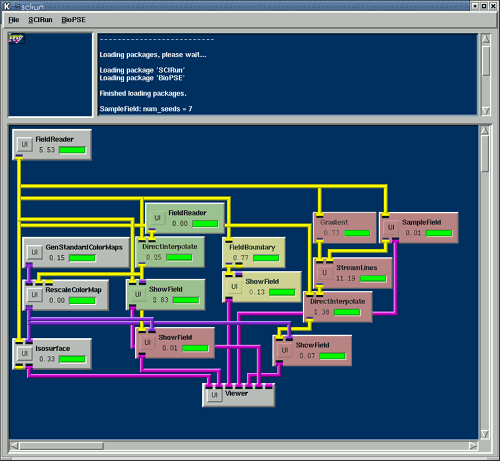
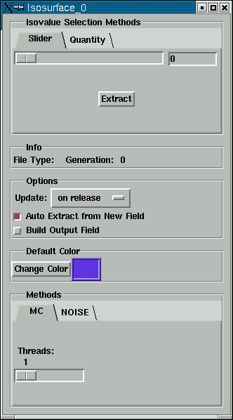

|
Chapter Overview In the previous chapter, we constructed three networks to visualize the utahtorso-lowres-voltage dataset. In this chapter, we will merge those networks into one larger network that performs all visualizations concurrently. For details, see the User's Guide 4.15, Navigating a Network. We will also add a fourth visualization tool--isosurface extraction. Now we will perform all of the 3A, 3B, and 3C work in a single network. This procedure involves sharing the FieldReader and Viewer modules across the A, B, and C networks that we created in the last chapter.
You can use the complete, color-coded network in Figure 4.1 that shows the previous chapter's networks. Yellow corresponds to 3A, green to 3B, and red to 3C. As soon as the Isosurface module executes, you will see this surface appear in the ViewWindow. Or, you may use the File/Insert command to insert all of the nets you saved in Chapter 3, along with their settings. You will need to destroy all but one Viewer module by right-clicking on the module and selecting the Destroy option. To destroy a connection between two modules, right-click on the pipe connecting those modules. In addition to the Viewer, these nets will also share the FieldReader module (in the left uppermost corner of Figure 4.1), which loads the utahtorso-lowres-electrodes.pcd.fld file.
The complete network appears in Figure 4.1. The network is color coded to show the networks from previous chapters, 3A, 3B, and 3C. Yellow corresponds to 3A, green to 3B, and red to 3C. After Isosurface executes, the surface shown in Figure 4.2. 
The Isosurface module's input is a volume field and its output is a surface field or scene graph data (visualized with or without a color map). The Isosurface's UI is shown in Figure Figure 4.3. The "iso-value" "slider" determines the location of the surface in the volume. The module will render the surface when you:

If you input a color map then it will be used to visualize the
surface, otherwise the
"Default Color" will appear. By default the surface is extracted using the the Marching Cubes
algorithm
but you may instead use the NOISE algorithm. You may also choose
the number of threads (processors)
the algorithm will use. Summary Now that you can perform concurrent visualizations, in Chapter 5 we
will begin
to use modules from the bioelectric problem solving environment
(BioPSE) package.
|